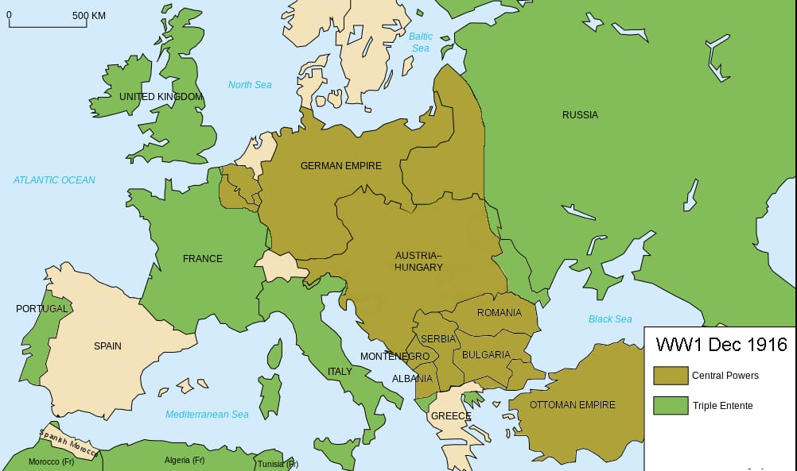

Sommas kauja – Lielbritānijas un Francijas uzbrukums Vācijai, kur tika izmantoti pirmie tanki, bet kauja beidzās bez izšķirošas uzvaras.
Jūras cīņa pie Jutlandes – Taktisks neizšķirts starp Britu un Vācijas floti, bet Vācija nezaudēja jūras kontroli.
Austroungārijas zaudējumi – Smagas neveiksmes cīņās ar Krieviju un Itāliju.
Jauni tehnoloģiski izgudrojumi – Pirmie tanku uzbrukumi, kas mainīja kara taktiku.
Verdunas kauja (1916. gada februāris – decembris) bija viena no Pirmā pasaules kara svarīgākajām un ilgstošākajām kaujām, kas norisinājās starp Vāciju un Franciju. Vācija vēlējās ātri pārņemt Verdunu, lai izsistu Franciju no kara, bet Francija uzstāja uz tās aizsardzību par jebkuru cenu.
Kauja bija ļoti smaga, ar milzīgiem zaudējumiem no abām pusēm, un frontes līnija lielākoties palika nemainīga. Pēc 10 mēnešu intensīvām cīņām, kurās tika zaudēti apmēram 700,000 cilvēku, Francija saglabāja kontroli pār Verdunu, kas kļuva par simbolu franču izturībai un nacionālajai lepnumam.
Tīro kauja (jūlijs-novembris) – Krievija uzsāka veiksmīgu ofensīvu pret Austroungāriju, atgūstot teritorijas Polijā un Ukrainā.
Brusīlas kauja (augusts) – Krievija uzvarēja Austroungāriju, pārņemot Bukovinu un citas teritorijas.
Vācijas kontruzbrukums – Vācijas spēki palīdzēja Austroungārijai, atgūstot daļu zaudēto teritoriju un nostiprinot savas pozīcijas.
Gaisa iznīcinātāji – Pilnveidoti gaisa iznīcinātāji kā "Sopwith Camel" un "Fokker D.II", kas uzlaboja gaisa cīņas.
Niršanas bomberi – Jauni lidmašīnu tipi, kas precīzāk nometa bumbas uz mērķiem.
Zemūdenes uzlabojumi – Vācijas zemūdenes tika efektivizētas tirdzniecības kuģu iznīcināšanai.
"Stosstrupen" taktika – Vācu agrīna uzbrukuma stratēģija, kas iedvesmoja mūsdienu šoka vienības.
 Vairāk Informācijas